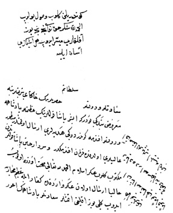

Belge 3: TKSA E.2457/11, veziriâzam ‘arzı
Belge 3
Özet:
1. İbşir Paşa’nın hediyeleri
2. Girit’ten Hüseyin Paşa’dan iyi haber, gönderilen askerle başarılı büyük çatışma.
Vâlide Sultan’ın emri:
“Hediyeler geldi. Girit’ten yeni eyi haberler beklenir.”
Yorum:
İbşir (veziriâzamlığı 28 Ekim 1654–11 Mayıs 1655), Anadolu’dan saraya hediye gönderiyor, belge 1654’te olmalı.